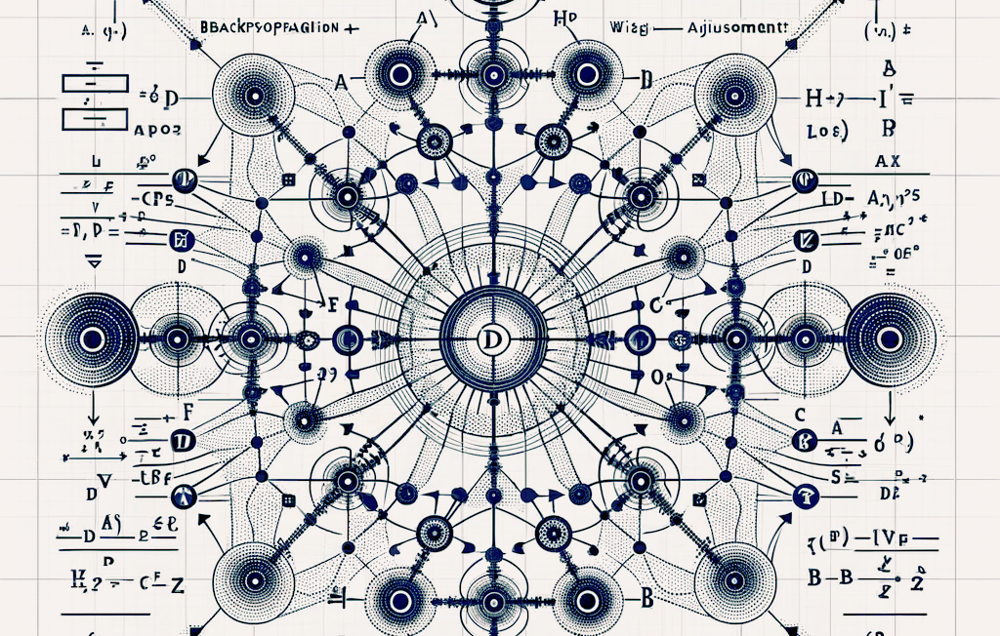
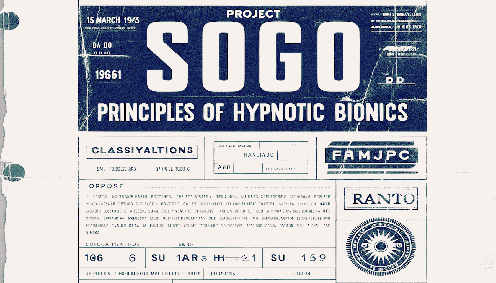
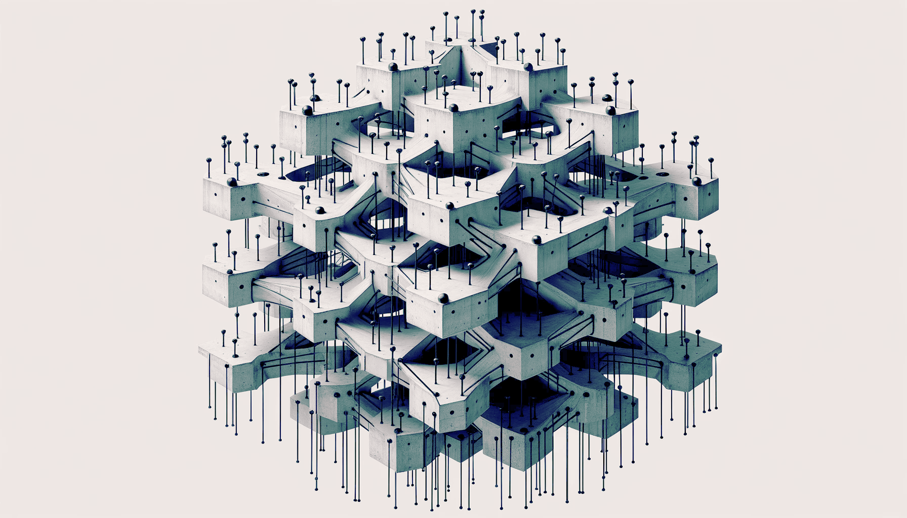
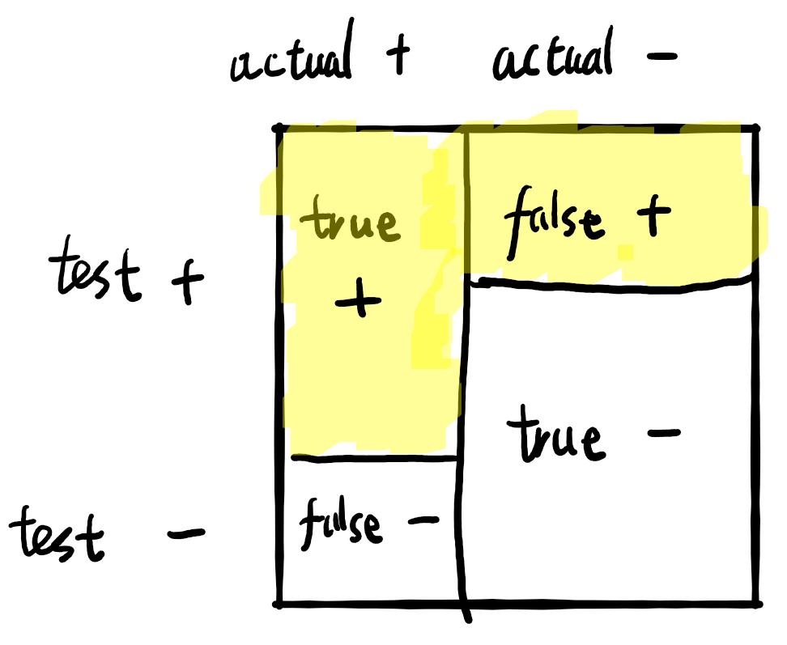
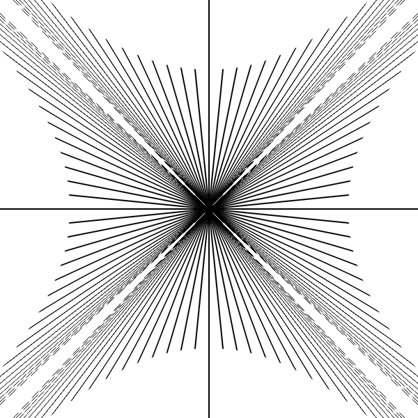

How MoE works, its history, and what it is good for.
Minimizing log-perplexity loss is equivalent to maximizing survival length in a Turing test. Assuming compute-loss scaling law, a scaled-up GPT that produces human-like science papers would cost ~200 years of global GDP.
Connectionism died in the 60s from technical limits to scaling, then resurrected in the 80s after backprop allowed scaling. The Minsky–Papert anti-scaling hypothesis explained, psychoanalyzed, and buried.

Why backprop was resisted for 20 years: assumption of discretely spiking neurons, goal of synthesizing Boolean logic, fear of local optima, and bad luck. Werbos has the best claim for invention.
Machine learning and self-reproduction according to Norbert Wiener.

A long, hard stare into the math of Perceptrons, the mythical neural network killer.

The bitter lesson in bite-sized packets.
Lain is the collective subconscious as a neural network.

The racial algorithmic bias controversy, as seen by a mathematician.

The other special relativity paradox that you have never heard of.